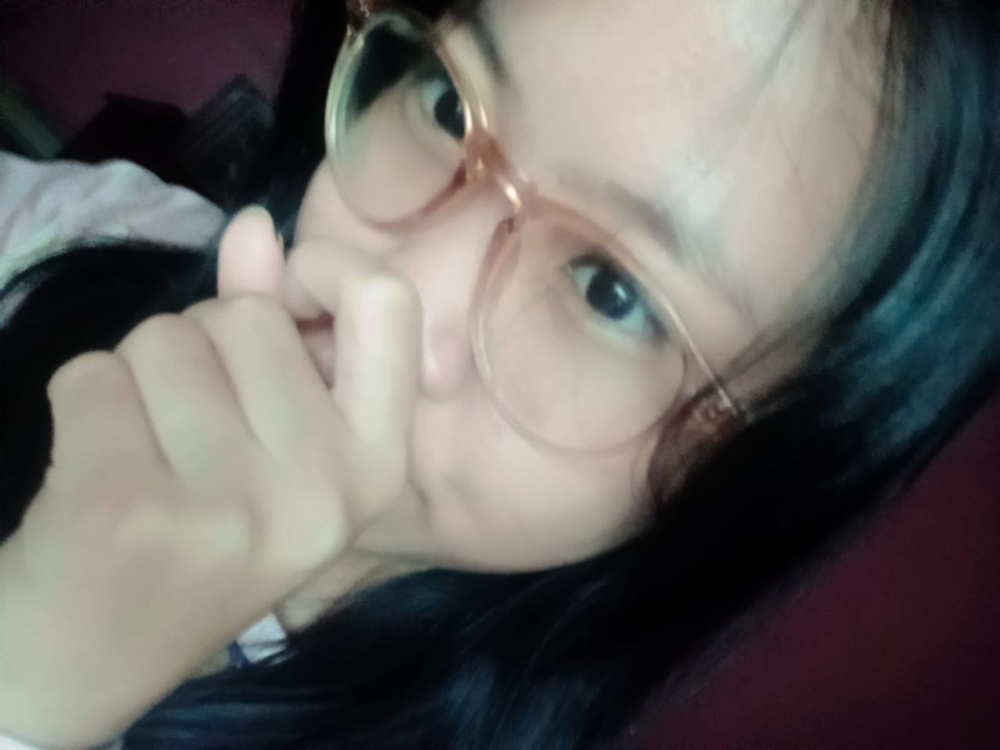

Aku mau kamu tahu pelan-pelan dan jujur dari aku, kalau kamu itu bukan sekadar orang yang lewat di hidup aku. Kamu punya tempat yang beda, yang nggak bisa digantikan sama siapa pun. Aku sayang kamu, dan itu bukan cuma kata-kata, tapi sesuatu yang aku rasain dan aku pilih setiap hari.Aku mungkin nggak selalu bisa nunjukin dengan cara yang sempurna, dan aku tahu kadang aku bisa bikin kamu ragu atau kepikiran banyak hal. Tapi satu yang harus kamu percaya, aku nggak pernah ngebandingin kamu sama siapa pun, dan aku nggak punya niat untuk ninggalin kamu.Aku pengen kita sama-sama jalan, bukan cuma aku yang berjuang sendiri atau kamu yang berjuang sendiri. Aku pengen kita saling ngerti, saling jaga, dan sama-sama usaha supaya hubungan ini nggak cuma bertahan, tapi juga tumbuh jadi lebih baik. Aku percaya kita bisa jadi lebih kuat kalau kita nggak saling ninggalin pas lagi capek atau salah paham.Kamu itu orang yang aku pilih, dan aku pengen terus milih kamu, bukan karena terpaksa, tapi karena aku yakin kamu yang paling aku mau. Jadi kalau kamu juga masih mau aku di hidup kamu, aku siap buat sama-sama belajar, sama-sama memperbaiki, dan sama-sama bikin kita jadi lebih baik dari sebelumnya. 🤍 ✨